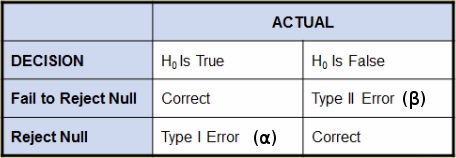

Introduction
Basic Statistical ConceptsLink
Descriptive statistics (exploratory data analysis, EDA)
- Explore your data
Inferential statistics (explanatory modelling)
- How is X related to Y?
- Sample sizes are typically small and include few variables
- The focus is on the parameters of the model
- To assess the model, you use p-values and confidence intervals
Predictive modelling
- If you know X, can you predict Y?
- Sample sizes are large and include many predictive (input) variables
- The focus is on the predictions of observations rather than the parameters of the model
- To assess a predictive model, you validate predictions using holdout sample data
- Parameters: numerical values (typically unknown, you can't measure the entire population) that summarize characteristics of a population (greek letters)
- Statistics: summarizes characteristics of a sample (standard alphabet)
- You use statistics to estimate parameters
- Independent variable: it can take different values, it affects or determines a dependent variable. It can be called predictor, explanatory, control or input variable.
- Dependent variable: it can take different values in response to an independent variable. Also known as response, outcome or target variable.
Scale of measurement: variable's classification
- Quantitative/numerical variables: counts or measurements, you can perform arithmetical operations with it
- Discrete data: variables that can have only a countable number of values within a measurement range
- Continuous data: variables that are measured on a scale that has infinite number of values and has no breaks or jumps
- Interval scale data: it can be rank-ordered like ordinal data but also has a sensible spacing of observations such that differenes between measurements are meaningful but it lacks a true zero (ratios are meaningless)
- Ratio scale data: it is rank-ordered with meaningful spacing and also includes a true zero point and can therefore accurately indicate the ratio difference between two spaces on the measurement scale
- Categorical/attribute variables: variables that denote groupings or labels
- Nominal data (qualitative/classification variable): exhibits no ordering within its observed levels, groups or categories
- Ordinal data: the observed labels can be ordered in some meaningful way that implies that the differences between the groups or categories are due to magnitude
- Univariate analysis provides techniques for analyzing and describing a sigle variable. It reveals patterns in the data by looking at the range of values, measures of dispersion, the central tendecy of the values and frequency distribution.
- Bivariate analysis describes and explains the relationships between two variables and how they change or covary together. It include techniques such as correlation analysis and chi-square tests of independance.
- Multivariate/Multivariable analysis examines two or more variables at the same time in order to understand the relationships among them.
- Techniques such as mutiple linear regression and n-way ANOVA are typically called multivariable analysis (only one response variable).
- Techniques such as factora analysis and clustering are typically called mutivariate analysis (they consider more than one response variable).
Descriptive Statistics
Measures of central tendencies: mean (affected by outliers), median (less sensitive to outliers), mode
| Percentile | Quartile | |
|---|---|---|
| 25th | 1st / lower / Q1 | |
| 50th | 2nd / middle / Q2 | Median |
| 75th | 3rd / upper / Q3 |
The interquartile range (IQR) is the difference between Q1 and Q3, it is a robust estimate of the variability because changes in the upper/lower 25% of the data do not affect it. If there are outliers in the data, then the IQR is a more reliable measure of the spread than the overall range.
The coefficient of variation (CV) is a measure of the standard deviation expressed as a percentage of the mean ($c_v = \sigma / 100 \mu$).
Normal distribution
| Intervals | Percentage contained |
|---|---|
| $\mu \pm \sigma$ | 68% |
| $\mu \pm 2 \sigma$ | 95% |
| $\mu \pm 3 \sigma$ | 99% |
How to check the normality of a sample?
- Compare the mean and the median: if they are nearly equal, that is an indicator of symmetry (requirement for normality)
- Check that skewness and kurtosis are close to 0:
- If both are greater than 1 or less than -1: data is not normal
- If either is greater than 2 or less than -2: data is not normal
Statistical summaries
Skewness and kurtosis measure certain aspects of the shape of a distribution (they are 0 and 3 for a normal distribution, although SAS has standardized both to 0)
- Skewness measures the tendency of your data to be more spread out on one side of the mean than on the other (asymmetry of the distribution).
- You can think of the direction of skewness as the direction the data is trailing off to.
- A right-skewed distribution tells us that the mean is greater than the median.
- Kurtosis measures the tendency of your data to be concentrated toward the center or toward the tails of the distribution (peakedness of the data, tail thickness).
- A negative kurtosis (platykurtic distribution) means that the data has lighter tails than in a normal distribution.
- A positive kurtosis (leptokurtic/heavy-tailed/outlier-prone distribution) means that the data has heavier tails and is more concentrated around the mean than a normal distribution.
- Rectangular, bimodal and multimodal distributions tend to have low values of kurtosis.
- Asymmetric distributions also tend to have nonzero kurtosis. In these cases, understanding kurtosis is considerably more complex and can be difficult to assess visually.
PROC SURVEYSELECTLink
How to generate random (representative) samples (population subsets):
1 2 3 4 5 6 7 | |
METHODspecifies the random sampling method to be used. For simple random sampling without replacement, useMETHOD=SRS. For simple random sampling with replacement, useMETHOD=URS. For other selection methods and details on sampling algorithms, see the SAS online documentation forPROC SURVEYSELECT.SEEDspecifies the initial seed for random number generation. If noSEEDoption is specified, SAS uses the system time as its seed value. This creates a different random sample every time the procedure is run.SAMPSIZEindicates the number of observations to be included in the sample. To select a certain fraction of the original data set rather than a given number of observations, use theSAMPRATEoption.
Picturing Your DataLink
PROC UNIVARIATELink
Plots that can be produced with this procedure:
- Histograms
- Normal probability plots: expected percentiles from standard normal vs actual data values

PROC SGSCATTERLink
Plots that can be produced with this procedure:
- Scatter plots: you can create a single-cell (simple Y by X) scatter plot, a multi-cell scatter plot with multiple independent scatter plots in a grid and a scatter plot matrix, which produces a matrix of scatter plots comparing multiple variables.
PROC SGPLOTLink
Plots that can be produced with this procedure:
1 2 3 4 5 6 7 8 9 10 11 | |
Anywhere in the procedure you can add reference lines:
1 2 3 4 | |
Note
The order on which you define the parts of the plot will the determined the order on which it is displayed (if you want to send a REFLINE to the back, define it first)
- Scatter plots (
SCATTER) - Line graphs
- Histograms (
HISTOGRAM) with overlaid distribution curves - Regression lines (
REG) with confidence and prediction bands - Dot plots (
DOT) - Box plots (
HBOX/VBOX): it makes it easy to see how spread out your data is and if there are any outliers. The box represents the middle 50% of your data (IQR). The lower/middle/upper line of the box represent Q1/Q2/Q3. The diamond denotes the mean (easy to check how close the mean is to the median). The whiskers extend as far as the data extends to a maximum length of 1.5 times the IQR above Q3. Any data points farther than this distance are considered possible outliers and are represented in this plot as circles. - Bar charts (
HBAR/VBAR) - Needle plot (
NEEDLE): creates a plot with needles connecting each point to the baseline - You can also overlay plots together to produce many different types of graphs
PROC SGPANELLink
Plots that can be produced with this procedure:
- Panels of plots for different levels of a factor or several different time periods depending on the classification variable
- Side-by-side histograms which provide a visual comparison for your data
PROC SGRENDERLink
- Plots from graphs templates you have modified or written yourself
To specify options for graphs you submit the ODS GRAPHICS statement:
1 | |
- To select/exclude specific test results, graphs or tables from you output, you can use
ODS SELECTandODS EXCLUDEstatements. - You can use ODS templates to modify the layout and details of each graph
- You can use ODS styles to control the general appearance and consistency of yous graphs and tables (by default HTMLBLUE).
Another way to control your output is to use the PLOTS option which is usually available in the procedure statement:
1 | |
This option enables you to specify which graphs SAS should create, either in addtion or instead of the default plots.
Confidence Intervals for the MeanLink
- A point estimator is a sample statistic used to estimate a population parameter
- An estimator takes on different values from sample to sample, so it's important to know its variance
- A statistic that measures the variability of your estimator is the standard error
- It differs from the standard deviation: the standard deviation deals with the variability of your data while standard error deals with the variability of you sample statistic
E.g.: $standard \ error \ of \ the \ mean = standard \ deviation/ \sqrt{sample \ size}$
The distribution of sample means is always less variable than the data.
- Because we know that point estimators vary from sample to sample, it would be nice to have an estimator of the mean that directly accounts for this natural variability
- The interval estimator gives us a range of values that is likely to contain the population mean
- It is calculated from the standard error and a value that is determined by the degree of certainty we require (significance level)
- Confidence intervals are a type of interval estimator used to estimate the population mean
- You can make the confidence interval narrower by increasing the sample size and by decreasing the confidence level
- The
CLMoption ofPROC MEANScalculates the confidence limits for the mean, you can addALPHA=to change the default 0.05 value for a 95% confidence level - The central limit theorem states that the distribution of sample means is approximately normal regardless of the population distribution's shape, if the sample size is large enough (~30 observations)
Hypothesis TestingLink
- The null hypothesis ($H_0$) is what you assume to be true when you start your analysis
- The alternative hypothesis ($H_a$ or $H_1$) is your initial research hypothesis, that is, your proposed explanation
Decision-making process:
- Define null and alternative hypothesis
- Specify significance level (type I error rate)
- Collect data
- Reject or fail to reject the null hypothesis

- The type I and II errors are inversely related: as one type increases the other decreases
- The power is the probability of a correct rejection = 1 - β
- It is the ability of the statistical test to detect a true difference
-
It is the ability to successfully reject a false null hypothesis
-
A p-value measures the probability of observing a value as extreme as the one observed
- The p-value is used to determine statistical significance
- It helps you assess whether you should reject the null hypothesis
-
The p-value is affected by:
- The effect size: the difference between the observed statistic and the hypothesized value
- The sample size: the larger the sample size, the more sure you are about the sample statistics, the lower the p-value is
-
A reference distribution enables you to quantify the probability (p-value) of observing a particular outcome (the calculated sample statistic) or a more extreme outcome, if the nul hypothesis is true
- Two common reference distributions for statistical hypothesis testing are the t distribution and the F distribution
- These distributions are characterized by the degrees of freedom associated with your data
- The t distribution arises when you're making inferences about a population mean and the population standard deviation is unknown and has to be estimated from the data
- It is approximately normal as the sample size grows larger
- The t distribution is a symmetric distribution like the normal distribution except that the t distribution has thicker tails
- The t statistic is positive/negative when the sample is more/less than the hypothesized mean
- If the data doesn't come from a normal distribution, then the t statistic approximately follows a t distribution as long as the sample size is large (central limit theorem)
Calculation with PROC UNIVARIATE:
1 2 3 4 5 6 7 8 | |
TESTSFORLOCATIONdisplays only the p-values calculation- By default
MU0 = 0